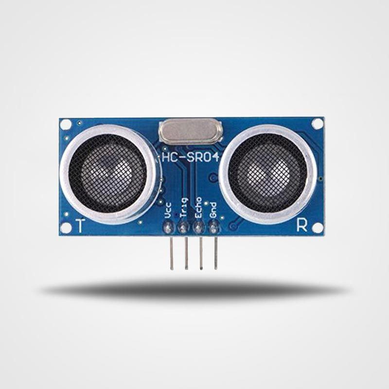

Ultrasonic Sensor - HC-SR04 🦸‍♂️🔊
The HC-SR04 is a widely used ultrasonic sensor that measures distances by using ultrasonic sound waves. It’s a popular sensor in robotics, automation, and DIY electronics due to its accuracy, simplicity, and low cost. It measures distance by emitting a sound wave and measuring the time it takes for the echo to return.
Key Features:
-
Distance Measurement 📏:
The HC-SR04 ultrasonic sensor can measure distances ranging from 2 cm to 400 cm with a high degree of accuracy. This makes it perfect for applications like distance sensing, obstacle detection, and proximity sensing. -
Two Components 🔄:
The sensor consists of two main components:
Transmitter: Emits the ultrasonic pulse.
Receiver: Receives the reflected pulse (echo). -
Working Principle ⚙️:
The sensor emits an ultrasonic sound wave at a frequency of 40 kHz. When the sound wave hits an object, it bounces back toward the sensor, and the echo time is measured. The distance is then calculated based on the time it took for the echo to return. -
Simple Interface 🔌:
The HC-SR04 sensor is easy to interface with a microcontroller (like Arduino) using just four pins:
VCC: Power input (usually 5V).
Trig: Trigger pin to initiate the measurement.
Echo: Receives the pulse’s return time.
GND: Ground pin. -
Low Power Consumption ⚡:
The HC-SR04 sensor is energy-efficient, making it ideal for battery-powered projects like robots, drones, or automatic measurement systems.
How It Works ⚙️:
Triggering: To begin a distance measurement, you send a 10-microsecond pulse to the Trig pin. This triggers the sensor to emit an ultrasonic pulse.
Echo Reception: The sensor emits the ultrasonic sound wave, which travels through the air. When the wave encounters an object, it bounces back, and the Echo pin receives the signal.
Time Calculation: The time taken for the pulse to travel from the sensor to the object and back is recorded. Since the speed of sound is known (approximately 343 meters per second in air at room temperature), the distance can be calculated using the formula:
Distance = (Time × Speed of Sound) / 2
The division by 2 accounts for the fact that the sound travels to the object and back.
Common Uses 🔧:
-
Obstacle Detection in Robotics 🤖:
In autonomous robots or vehicles, the HC-SR04 sensor is used for detecting obstacles and avoiding collisions. It helps the robot navigate around objects by measuring the distance to surrounding obstacles. -
Distance Measurement 📏:
The HC-SR04 sensor is used in a variety of distance-measuring applications, such as automatic door opening systems, liquid level sensors, or measuring the height of objects in a controlled environment. -
Proximity Sensors 🚶‍♂️:
It’s commonly used in proximity sensing applications like parking sensors in cars, where the sensor detects the distance between a vehicle and an obstacle. -
Object Counting and Presence Detection 📦:
In industrial or commercial applications, it’s used to detect the presence or count the number of objects passing through a sensing area by measuring the distance to objects. -
Drone Altitude Sensing 🚁:
The HC-SR04 is used in drones to measure altitude by calculating the distance between the drone and the ground or other surfaces.
Advantages ✅:
- Affordable 💰: The HC-SR04 is one of the most cost-effective ultrasonic sensors available, making it perfect for hobbyists and makers on a budget.
- High Accuracy 🎯: It provides accurate distance measurements with minimal error, ideal for precise distance sensing in various projects.
- Easy to Interface 🖥️: With just four pins and simple control via microcontrollers like Arduino, it's beginner-friendly and easy to integrate into projects.
- Non-contact Measurement ✋: The sensor doesn’t require physical contact with the object being measured, which can be useful in applications where physical interaction with the object is not desired (e.g., measuring moving objects).
- Versatile 🔄: The HC-SR04 sensor can be used in a wide range of projects, from robotics and automation to sensing applications like parking assist systems and altitude measurement.
Limitations 🚫:
- Limited Range 📏: The HC-SR04 sensor has a maximum range of 400 cm, which may not be suitable for long-distance measurements. It’s best suited for short-range applications.
- Environmental Factors 🌡️: The accuracy of the sensor can be affected by environmental factors, such as temperature, humidity, or air pressure, since the speed of sound can vary with these conditions.
- Angle Sensitivity 🔄: The sensor has a narrow beam angle, which means it’s most effective when the object is directly in front of it. It may not work as well for objects at an angle to the sensor.
Conclusion 🏁:
The HC-SR04 ultrasonic sensor is an excellent tool for measuring distances in a wide variety of applications. Its affordability, accuracy, and ease of use make it a top choice for projects involving robotics, automation, and proximity sensing. Whether you're building a robot, measuring distances, or detecting obstacles, the HC-SR04 offers a simple yet effective solution.